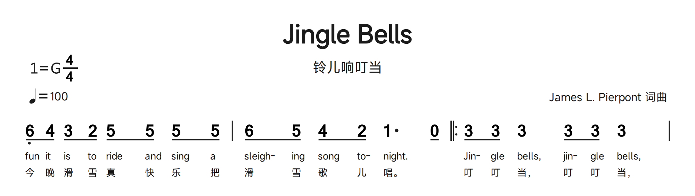
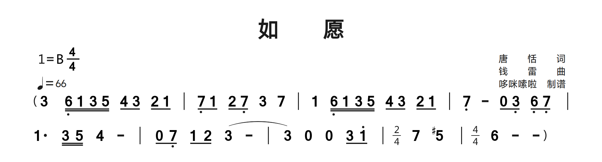
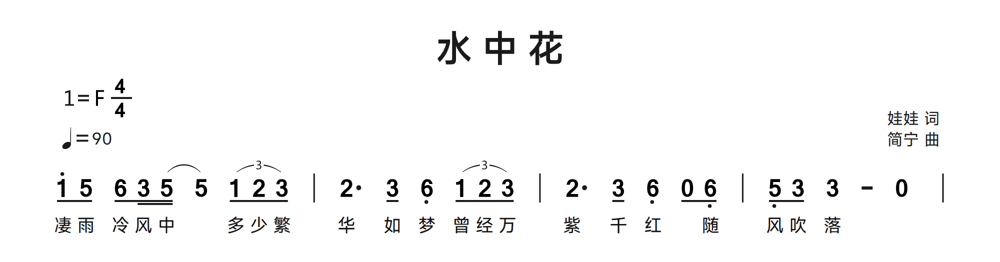
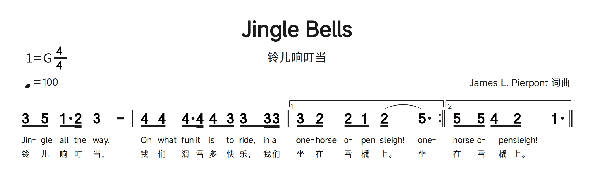
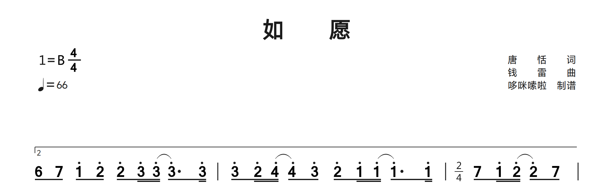
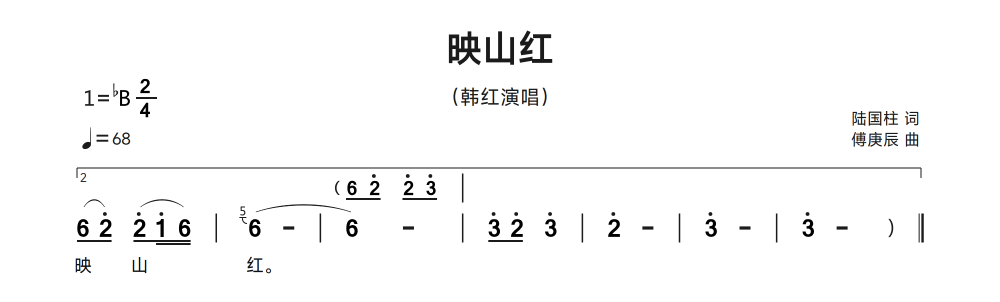
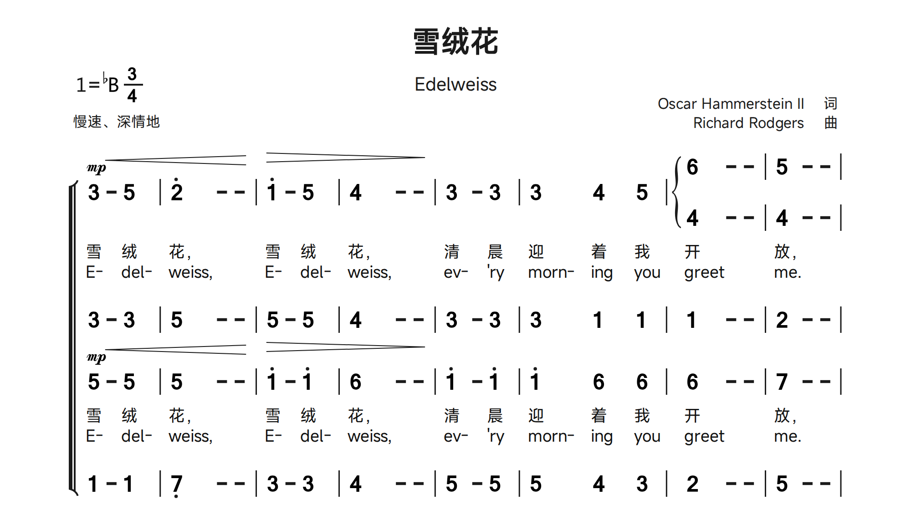
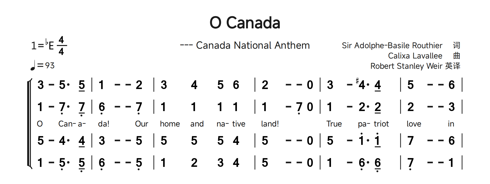

20. Barlines and repeat instructions
| Syntax | Appearance/use |
|---|---|
| | | Single / 普通小节线 |
| || | Thin-left/thick-right final line / 左细右粗终止线 |
| ||/ | Two thin lines / 双细线 |
| |: | Start repeat / 左反复 |
| :| | End repeat / 右反复 |
| :|: | End/start repeat / 两侧反复 |
| |/ | Hidden, no layout width / 不显示、不占位 |
| |* | Hidden, reserves layout width / 不显示、占位 |
| Barline-attached code | Meaning |
|---|---|
| ||&fine | Fine / 终止 |
| ||&dc. | D.C. / 从头反复 |
| ||&ds | D.S. / 从记号反复 |
| |&ty | Coda / 尾声记号 |
| |&hs | Segno / 反复跳转记号 |
Repeat/navigation marks belong to a barline, not an ordinary note. Use |/ at a row beginning when a barline-attached mark is needed without a visible barline. Use |* to reserve alignment space, especially with mixed single/multiple voices. These marks are printed; playback navigation is not provided.
Visible and invisible boundaries
Use | for an ordinary boundary, || for the final thin/thick boundary and ||/ for two thin lines. |:, :| and :|: mark repeat starts, ends and combined end/start boundaries. A barline divides music; it does not insert a rest. |/ is invisible and takes no barline width, useful at a row-start ending or navigation mark. |* is invisible but reserves width, useful for aligning a later voice entry. These two hidden forms are not interchangeable.
Fine, D.C., D.S., segno and coda
Attach &fine, &dc. and &ds to a barline to print Fine, D.C. or D.S.; &hs draws the segno and &ty the coda sign. For a row-start sign, create a hidden |/ anchor rather than attaching the code to an unrelated note. A repeat ending label such as "1,2" is separate from a navigation command. The viewer displays these symbols but does not execute a playback route. Check that the written route is musically complete yourself.
A repeat beginning inside a source row
The |: occurs after two bars. A repeat boundary is part of the musical flow, not a request for a new source row. The lyric skip markers align unsung notes before the chorus.
bundled examples: JingleBells.jps · source lines 18-20. Excerpt rendered with the Linux package font set; blank page space omitted. Download this JPS excerpt
JPS source
Q: 6,/ 4/ 3/~ 8~ 2/ 5/~ 8~ 5/ 5/~ 8~ 5/ | 6/ 5/ 4/~ 8~ 2/ 1. 0/ |: 3/ 3/ 3 3/ 3/ 3 |
C: fun /it /is @/to /ride @/and /sing @/a /sleigh- /ing /song @/to- /night~. @Jin- /gle /bells~, jin- /gle /bells~,
C: 今晚滑@雪真@快乐@把滑雪歌@儿唱。@叮叮当，叮叮当，
21. Slurs and tuplets
Wrap music in parentheses for a slur: (1 2 3). Spans can nest and continue across barlines or music rows on the same page. Open the span in the earlier Q row and close it in the later row of the same voice. Use (y1 2 3) for a tuplet; the group count is inferred from its notes. Do not use a capital Y. Cross-page slurs are not automatically continuous: split/reopen spans at manual page boundaries and inspect the result.
Q: (1 (2 3) 4 | 5 6
Q: 7 1') | (y1/ 2/ 3/) 4 5 6 ||Nested, cross-bar and cross-row spans
Open ( on the first included note and close ) on the last. Nested pairs form separate spans; keep a count while editing. A barline inside the pair does not end the slur. On the same page, leave it open at the end of a Q row and close it on a later row of that voice. If a lyric line intervenes, it remains a lyric, not a slur terminator. At a manual page break, split/reopen the span deliberately. Ending branches also need intentional span boundaries; do not place a close on an unrelated voice merely to silence a warning.
For a continuation that begins before the first note, use a hidden barline inside the parentheses, for example Q: (( |/ 6)) - - - |. Each nested pair keeps a separate curve, including a short continuation cap at the row start. A span that crosses music rows draws an open fragment on each row, including when the curved-path style is selected. Every printed inner tie still needs its own parentheses in JPS.
A slur is not a tuplet
(1/ 2/ 3/) is an ordinary three-note slur; (y1/ 2/ 3/) is a tuplet. The renderer infers the count from the group, so changing its notes changes the printed number. Do not type a guessed number after y as though it were a ratio field. Keep the group limited to the intended notes and compare its bracket/number with the reference. A printed tuplet is not proof that every surrounding bar has been rhythmically validated.
A slur crossing a barline
In the second row, (3 - | 3) opens before a continuation and closes in the next bar. The same note number at both endpoints is not enough: the parentheses define the printed span.
bundled examples: As-Wished.jps · source lines 11-12. Excerpt rendered with the Linux package font set; blank page space omitted. Download this JPS excerpt
JPS source
Q: 3&zkh 6,// 1// 3// 5// 4/ 3/ 2/ 1/ | 7,/ 1/ 2/ 7,/ 3 7 | 1 6,// 1// 3// 5// 4/ 3/ 2/ 1/ | 7, - 0/ 3,/ 6,/ 7,/ |
Q: 1. 3// 5// 4 - | 0/ 7,/ 1/ 2/ (3 - | 3) 0 0 3/ 1'/ |"p:2/4" 7 5# |"p:4/4" 6 - -&ykh
Ordinary slurs beside triplet groups
(5// 5) is an ordinary slur; (y1/ 2/ 3/) creates a numbered three-note tuplet. The y is lowercase and comes immediately after the opening parenthesis.
bundled examples: Flower-In-Water.jps · source lines 12-13. Excerpt rendered with the Linux package font set; blank page space omitted. Download this JPS excerpt
JPS source
Q: 1'/ 5/ 6/ 3// (5// 5) (y1/ 2/ 3/) | 2. 3/ 6, (y1/ 2/ 3/) | 2. 3/ 6, 0/ 6,/ | 5,/ 3/ 3 - 0 |
C: 凄雨冷风中 @多少繁华如梦 曾经万紫千红 @随风吹落
22. Endings and temporary meter
Ending brackets [ and ] are attached to barlines. Put their label in a quoted barline annotation. A start at the beginning of a row uses hidden |/. Add / after [ for an open right edge; add + (or several +) to raise the bracket and avoid overlapping slurs. Ending spans may cross rows; keep their endpoints in the correct voice. The same brackets attached to a note mean grace notes, so placement matters.
Q: |/["1" 1 2 3 4 :|] |/["2" 5 6 7 1' ||]
Q: |/[+/"1,2" 1 2 3 4 | 5 6 7 1' |]For a meter change, put "p:3/4" after the barline. This prints the local time signature and updates automatic grouping for the following notes in that voice. Changing to 6/8, 9/8 or 12/8 selects dotted-quarter groups; changing to 3/4 or 4/4 restores quarter-note groups. Use ~ or ^ for any intentional override.
Q: 1 2 3 4 |"p:3/4" 5 6 7 |Place each ending on barlines
An ending opens with [ attached to a barline and closes with ] attached to a later barline. The quoted label belongs to the barline, not to a note. For a beginning at the left of a music row, use |/["1". Use [+, [++ and further + to raise the line above nearby slurs. An open-edge form can use / on the bracket syntax; library scores also use a closing |]/ to omit the right corner. Copy a complete opening/closing pair and inspect it rather than moving brackets alone.
Cross-row endings and local meter
An ending may continue into the next music row on the same page. Keep its label, endpoint, repeat barline and lyric ending consistent. For a local meter, write |"p:3/4" with lowercase p inside the quotes. A row-start local change can use |/"p:3/4". Header P: 3/4 sets the initial meter; if it lists several meters, the first is used until a local change. Within a page, later rows of the same voice retain their local meter. In compound meter, the grouping phase also continues across rows. Other voices retain their own meter, and underline segments end at each row boundary. To return to an earlier meter, write it explicitly, for example |"p:4/4". Reintroduce a local meter after a manual page break when needed. Review durations and custom grouping at every change; a meter annotation does not redistribute the source notes.
First and second endings on one row
The first ["1" begins on a barline and ends at :|]; ["2" follows on that same boundary and finishes at ||]. Compare the two branches with the matching lyric endings.
bundled examples: JingleBells.jps · source lines 22-24. Excerpt rendered with the Linux package font set; blank page space omitted. Download this JPS excerpt
JPS source
Q: 3/ 5/ 1/. 2// 3 - | 4/~ 8~ 4/ 4./~ 4// 4/~ 8~ 3/ 3/~ 3//~ 3// |["1" 3/ 2/ 2/~ 8~ 1/ (2/ 5.) :|]["2" 5/ 5/ 4/~ 8~ 2/ 1. ||]
C: Jin- /gle /all /the /way~. Oh @/what /fun /it /is @/to /ride~, in /a /one- /horse /o- @/pen /sleigh~! one- /horse /o- @/pen /sleigh~!
C: 铃儿响叮当，我@们滑雪多@快乐，我们坐在雪@橇上。坐在雪@橇上。
Raised ending, row-start anchor and open right edge
|/ provides an invisible row-start anchor; [+ raises the bracket. The closing |]/ leaves an open right edge. The local "p:2/4" changes the printed meter during the passage.
bundled examples: As-Wished.jps · source lines 32-32. Excerpt rendered with the Linux package font set; blank page space omitted. Extra top clearance separates the isolated ending from the header. Download this JPS excerpt
JPS source
Q: |/[+"2" 6/ 7/ 1'/ 2'/ 2'/ 3'// (3'// 3'/.) 3'// | 3'/ 2'// (4'// 4'/) 3'/ 2'/ 1'// (1'// 1'/.) 1'// |"p:2/4" 7/ 1'// (2'// 2'/) 7/ |]/
23. Voices and temporary accompaniment
Use Q1, Q2, etc. for numbered music parts; C/C1/C2 rows supply the associated lyric lines. Preserve their ordering and inspect the preview when adapting library scores. A voice name can follow its number in quotes. Keep successive voices rhythmically aligned; numbered music rows form a system, while lyrics attach to their matching voice. Single and multiple voices can be mixed. A mid-row voice brace is indicated by &sbf; use hidden rest 8 and hidden barline |* to reserve earlier space in secondary voices.
Q1"Soprano": 1 2 3 4 |
C1: 春 风 吹 来
Q2"Alto": 3, 4, 5, 6, |
C2: 花 儿 开 了Temporary accompaniment uses {bz ...}; temporary multiple voices use {dsb ...}. The keyword must immediately follow { and be lowercase. These inline groups are positioned against the main music. Copy an appropriate bundled example and check duration/alignment instead of assuming arbitrary blocks will align automatically.
A temporary voice may begin a row, for example Q: {dsb ( |/ 3 - - - | 3) } ( |/ 1 - - - | 1) 0 0 0 |. The upper voice follows the written main-voice timeline; an initial hidden barline adds no beats, and a final singleton note remains visible. Following notes return to the main row when the upper voice ends. In a numbered system, the system brace supplies the opening. Keep the main voices' measure durations and separators consistent for shared columns; a missing written barline is not supplied automatically.
A temporary accompaniment block may contain several measures and more notes than its host melody; its notes, visible rests and later measures are retained. In a score with multiple voices, the host melody keeps its shared duration grid with the other parts; the accompaniment does not add beats to that melody. A block at a row end can align with the following row of the same voice. When no following melody is available, including a standalone or terminal block, its contents are still displayed. Nested {bz ...} notes render once. Review alignment whenever the rhythms or measure counts differ.
Q: 3 4 | {bz 1&zkh 2 3 4 | 5 6 7 1'&ykh} 5 6 7 1' |
Q: 3 4 | {dsb 1 2 3 4 | 5 6 7 1'} 5 6 7 1' |A minimal mid-row brace pattern (inspect alignment in the preview):
Q1: 1 2 3 4 |&sbf 5 6 7 1' |
Q2: 8 8 8 8 |* 3 4 5 6 |Build a system one part at a time
Use Q1, Q2, Q3 and Q4 for simultaneous parts, not four successive solo rows. A quoted name follows the number before the colon, for example Q1"Soprano":. Enter one system, compare bar boundaries and durations across its parts, then add its lyric rows and the next system. A missing rest cannot be repaired by visually adding spaces. Library scores include unnumbered C and numbered lyric lanes; their placement is context-sensitive. Preserve a working sample's row ordering and confirm the result when assigning new lyrics.
Temporary blocks and a mid-row brace
{bz ...} is a temporary accompaniment block; {dsb ...} is temporary multiple-voice content. The lowercase keyword follows { immediately. These attach inline to the main passage, while top-level Q2 starts another full part. Count both brace endpoints and the slurs within the block. For a mid-row voice entry, &sbf marks the brace position in the first voice; secondary voices use duration-compatible hidden 8 events and |* boundaries before the entry. This technique is in the reference but no bundled example uses &sbf, so the minimal pattern above is a constructed exercise, not a library quotation.
Temporary accompaniment above the melody
The {bz ...} group is embedded inside the second bar, while the main slur closes on the following 6. A raised second-ending bracket spans the passage. Read brace, bracket and parenthesis pairs separately.
bundled examples: Azalea.jps · source lines 29-30. Excerpt rendered with the Linux package font set; blank page space omitted. Download this JPS excerpt
JPS source
Q: |/[+++"2" (6/ 2'/) (2'/ 1'// 6//) | (6[5] - | {bz 6/&zkh 2'/ 2'/ 3'/ | } 6) - | 3'/ 2'/ 3' | 2' - | 3' - | 3' - 8&ykh ||]
C: 映@山@@红。
Temporary multiple voices within a full choir system
Q1 contains {dsb 6 - - | 5 - - | } while its main sequence continues with 4. Compare this inline branch with the ordinary Q2/Q3/Q4 parts. A brace group is not a new top-level Q row.
bundled examples: Edelweiss - Choir ChinEng.jps · source lines 11-18. Excerpt rendered with the Linux package font set; blank page space omitted. Download this JPS excerpt
JPS source
Q1: 3&mp -<+ 5 | 2' - -! | 1'> - 5 | 4 - -! | 3 - 3 | 3 8 4 8 5 | {dsb 6 - - | 5 - - | } 4 - - | 4 - - |
C1: 雪绒花，雪绒花，清晨迎@着@我开放，
C2: E-/ del-/ weiss~, E-/ del-/ weiss~, ev-/ '~r~y morn-/ @ing/ @you/ greet/ me~.
Q2: 3 - 3 | 5 - - | 5 - 5 | 4 - - | 3 - 3 | 3 8 1 8 1 | 1 - - | 2 - - |
Q3: 5&mp -<+ 5 | 5 - -! | 1'> - 1' | 6 - -! | 1' - 1' | 1' 8 6 8 6 | 6 - - | 7 - - |
C3: 雪绒花，雪绒花，清晨迎@着@我开放，
C4: E-/ del-/ weiss~, E-/ del-/ weiss~, ev-/ '~r~y morn-/ @ing/ @you/ greet/ me~.
Q4: 1 - 1 | 7, - - | 3 - 3 | 4 - - | 5 - 5 | 5 8 4 8 3 | 2 - - | 5 - - |
Four aligned parts and reserved blank slots
Q1 through Q4 form one system. Compare the simultaneous barlines and the inserted 8 slots. Numbered C rows in library files can also denote successive lyric lanes: inspect their actual preview rather than mechanically renumbering a borrowed score.
bundled examples: O-Canada Choir.jps · source lines 13-17. Excerpt rendered with the Linux package font set; blank page space omitted. Download this JPS excerpt
JPS source
Q1: 3 - 5. 5/ | 1 - - 2 | 3 8 4 8 5 6 | 2 - - 0 | 3 - 4#. 4/ | 5 - - 6 |
Q2: 1 - 7,. 7,/ | 6, - - 7, | 1 8 1 8 1 1 | 1 - 7, 0 | 1 - 2. 2/ | 2 - - 3 |
C: O /Can- /a- /da~! Our/ home / @and /@na-tive/ land~! @@True /pa-triot /love/ in
Q3: 5 - 4. 4/ | 3 - - 5 | 5 8 5 8 5 4 | 5 - - 0 | 5 - 1'. 1'/ | 7 - - 6 |
Q4: 1 - 5,. 5,/ | 6, - - 5, | 1 8 2 8 3 4 | 5 - - 0 | 1 - 6,. 6,/ | 7, - - 1 |